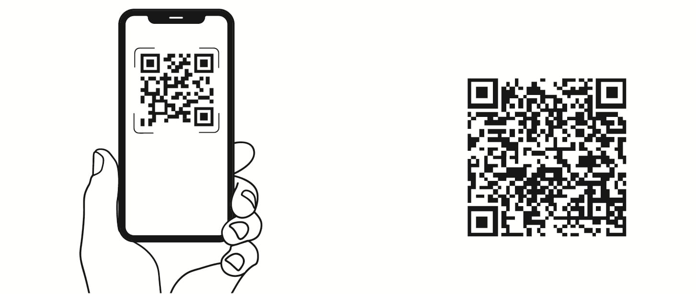

최신 취급설명서 확인하기
최신 버전의 취급설명서를 확인하려면 QR 코드를 스캔하십시오.

안전한 곳에 정차한 후 취급설명서를 확인하십시오. 주행 중 운전자의 주의가 분산되면 사고로 인해 인명피해 및 재산상 손실이 발생할 수 있습니다.
최신 버전의 취급설명서를 확인하려면 QR 코드를 스캔하십시오.

안전한 곳에 정차한 후 취급설명서를 확인하십시오. 주행 중 운전자의 주의가 분산되면 사고로 인해 인명피해 및 재산상 손실이 발생할 수 있습니다.